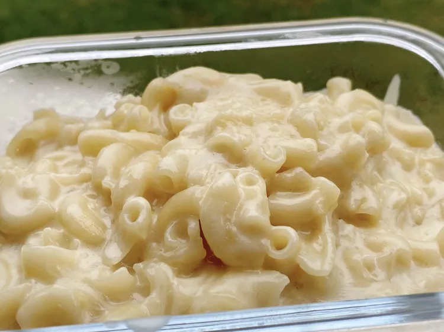

Skillet Macaroni and Cheese

Ditch the boxed stuff with this easy to make mac and cheese. With just a handful of ingredients it can be ready faster than boxed macaroni.
Ingredients
- 6 ounces macaroni
- water to cover
- 1 (5 ounce) can evaporated milk
- 1 ounce heavy cream
- 6 ounces grated Colby cheese
Steps
- Place a medium skillet over medium-high heat. Pour in dry macaroni noodles. Pour in enough water to barely cover macaroni. Bring to a boil, stirring continuously.
- Continue stirring the macaroni until water is almost evaporated and pasta is tender yet firm to the bite, about 8 minutes. Pour in evaporated milk and cream. Add grated cheese and stir until cheese has melted and everything is well combined. Serve immediately.